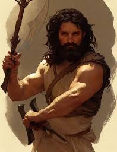

A brief history of the Cainite race:
Caine
To understand the race of the Cainites, one must first underst what they are and where they come from. The basic, accepted genealogy of the Cainites is as follows: Caine begat three childer.
- Ynosh
- Irad
- Zillah
The Second Generation
Although much has been said about Caine and His Grandchilder, little information is known about Caine's direct childer. We do know they were embraced in the following order:
- Ynosh
- Irad
- Zillah